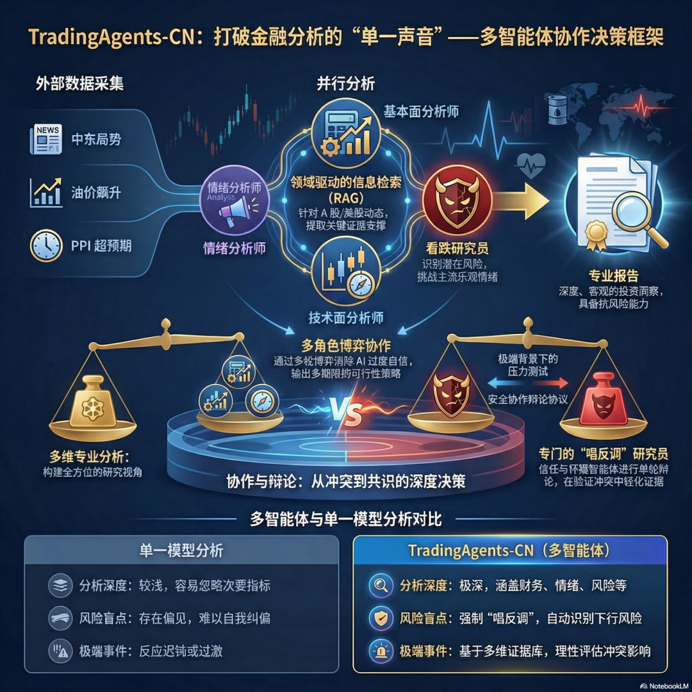
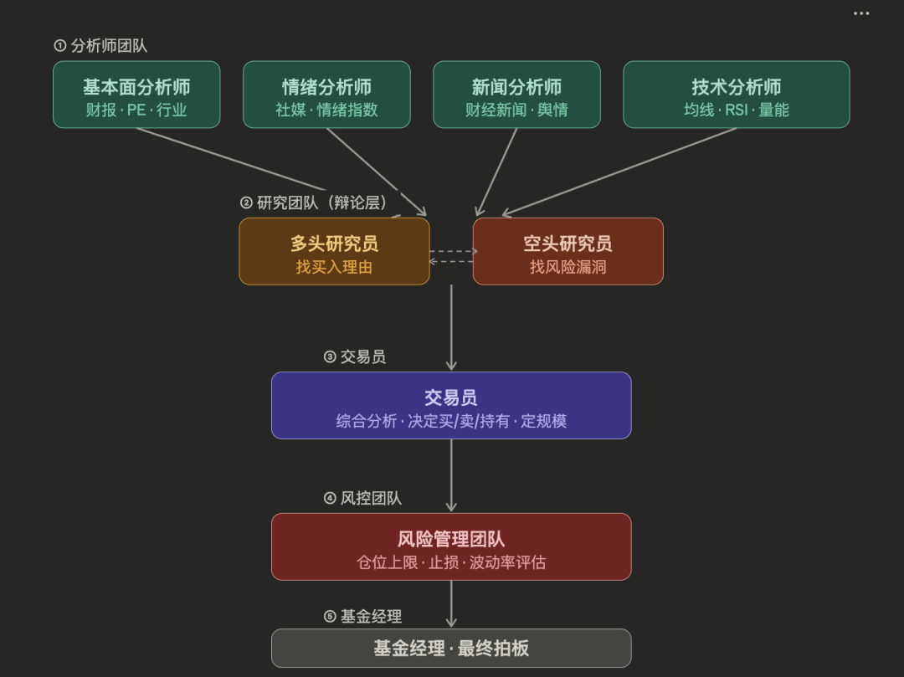

中东冲突持续升级、美联储鹰派转向、油价飙升，三个因素叠在一起，全球风险偏好同步收缩。A股，港股，美股3月份都迎来大幅回调，热门股PPMT3天更是暴跌30%+。
恐慌的时候，大多数人做的事情一样——要么盯着 K 线发呆，要么问身边人「你觉得还会跌吗」，要么去刷财经博主的最新观点。

中东冲突持续升级、美联储鹰派转向、油价飙升，三个因素叠在一起，全球风险偏好同步收缩。A股，港股，美股3月份都迎来大幅回调，热门股PPMT3天更是暴跌30%+。
恐慌的时候，大多数人做的事情一样——要么盯着 K 线发呆，要么问身边人「你觉得还会跌吗」，要么去刷财经博主的最新观点。

中东冲突持续升级、美联储鹰派转向、油价飙升，三个因素叠在一起，全球风险偏好同步收缩。A股，港股，美股3月份都迎来大幅回调，热门股PPMT3天更是暴跌30%+。
恐慌的时候，大多数人做的事情一样——要么盯着 K 线发呆，要么问身边人「你觉得还会跌吗」，要么去刷财经博主的最新观点。

中东冲突持续升级、美联储鹰派转向、油价飙升，三个因素叠在一起，全球风险偏好同步收缩。A股，港股，美股3月份都迎来大幅回调，热门股PPMT3天更是暴跌30%+。
恐慌的时候，大多数人做的事情一样——要么盯着 K 线发呆，要么问身边人「你觉得还会跌吗」，要么去刷财经博主的最新观点。
这三件事有一个共同的问题：你听到的永远是一种声音。
K 线只有价格，没有逻辑。身边人和你信息来源大概率重叠。财经博主的观点，你不知道他是真的在分析还是在表演。
TradingAgents-CN 想解决的，正是这件事。它不是让一个 AI 替你做判断，而是强制让多个 AI 从不同角度分析同一只股票——有人读财报，有人看情绪，有人盯技术面，有人专门负责唱反调。
TradingAgents-CN 是什么？
不是炒股机器人，是一个会开会吵架的分析师团队
你第一次听到「多 Agent 炒股框架」，脑子里浮现的画面大概是这样的：
一个 AI，盯着 K 线，自动下单，每天跑出收益。
这个画面和 TradingAgents-CN 的实际样子差得很远。
它不盯 K 线。它不自动下单。它甚至不是一个 AI——它是一群 AI 在开会。
一个真实的类比
想象一家小型私募基金的研究部门。周一早上，基金经理说：「研究一下茅台，我们要不要建仓？」
接下来发生的事是这样的：
研究员 A 去翻财报，看 PE、PB、净利润增速，写成报告。
研究员 B 去刷财经新闻和社交媒体，看市场情绪怎么样，写成报告。
研究员 C 去看技术面，均线、RSI、量能，写成报告。
然后，团队里的乐观派和悲观派坐在一起，就着这三份报告开始互怼——「我觉得可以买」「我觉得有风险」——吵了一轮，形成综合意见。
交易员拿到综合意见，决定买多少、什么价格进。
风控团队看了一眼说：「没问题，但仓位不能超过 10%。」
基金经理最终拍板。
TradingAgents-CN 做的，就是把这个流程全部用 LLM 跑一遍。每个角色都是一个独立的 Agent，有自己的任务、工具和约束。
这就是它和「一个 AI 帮你分析股票」的本质区别：不是一个人在想，是一群人在争。
它从哪来？
TradingAgents-CN 的源头是 Tauric Research 在 2024 年底发表的一篇论文，随后开源了英文原版。
hsliuping 在 2025 年初把它 fork 下来，做了一件很重要的事：不是简单翻译，而是针对中文用户的真实痛点做了大量改造。
原版缺什么，他加了什么？
原版没有 A 股数据支持，他接了 Tushare、AkShare、BaoStock 三个数据源。原版只能用 OpenAI，他把 DeepSeek、通义千问、百度文心全都接进来了。原版的新闻分析没有针对中文财经内容优化，他加了多层新闻过滤和质量评估。
现在这个项目在 GitHub 上有 21k+ stars。对于一个一个人维护的技术项目来说，这个数字说明了一些事情。
https://github.com/hsliuping/TradingAgents-CN
https://github.com/hsliuping/TradingAgents-CN
它能做什么，不能做什么？
能做的：
给你一只股票，跑完整个分析流程——基本面、情绪面、技术面、多空辩论、风控审查——最后输出一份结构化报告，告诉你当前信号是买入、卖出还是持有，以及背后的逻辑链。
支持 A 股、港股、美股。支持用 DeepSeek 这类便宜模型来跑，成本可控。
不能做的：
它没有实盘接口。它不会帮你自动下单。它给的是分析意见，不是操作指令。
这一点要说清楚，因为很多人第一次看到这个项目就问「能直连券商吗」。不能，也不该。
它的定位是研究和学习平台，不是交易系统。把它的输出当作分析参考，而不是操作信号。这个边界很重要。
为什么多 Agent 比单个 AI 问答强？
很多人会问：我直接让 ChatGPT 分析这只股票不行吗？
行，但你得到的是一个人的意见。而且这个人的观点会随着你的问法漂移——你问得乐观，它说乐观；你问得谨慎，它说谨慎。
TradingAgents-CN 强制把乐观视角和悲观视角分给不同的 Agent，让它们先各自独立分析，再放在一起互相质疑。这个结构本身就在抵抗「一边倒」的风险。
更重要的是，每一步都有记录。你看到的不只是最终结论，你能看到基本面分析师写了什么、情绪分析师发现了什么、多空研究员是怎么争的、风控又提了什么条件。
这叫可解释性。在投资决策里，这比结论本身更值钱。
谁在看盘，谁在读财报，谁在扫舆情，谁在唱反调？
TradingAgents-CN 是一群 AI 在开会。这群 AI 一共有几个，每个是谁，干什么，用什么工具，信息怎么流动。

七个 Agent，分五层往下跑：
基本面分析师翻财报看公司赚不赚钱，技术分析师盯 K 线看均线和量能，新闻分析师扫财经资讯过滤噪音，情绪分析师刷社交媒体算市场恐贪指数——四个人同时开工、互不通气，各写一份报告交上去。
然后多头研究员和空头研究员拿着这四份报告互相唱反调，一个找买入理由，一个找风险漏洞，吵完得出综合判断；交易员接过判断决定买卖方向和仓位大小；最后风控团队审一遍，仓位超线的打回重来，通过了才到基金经理最终拍板。